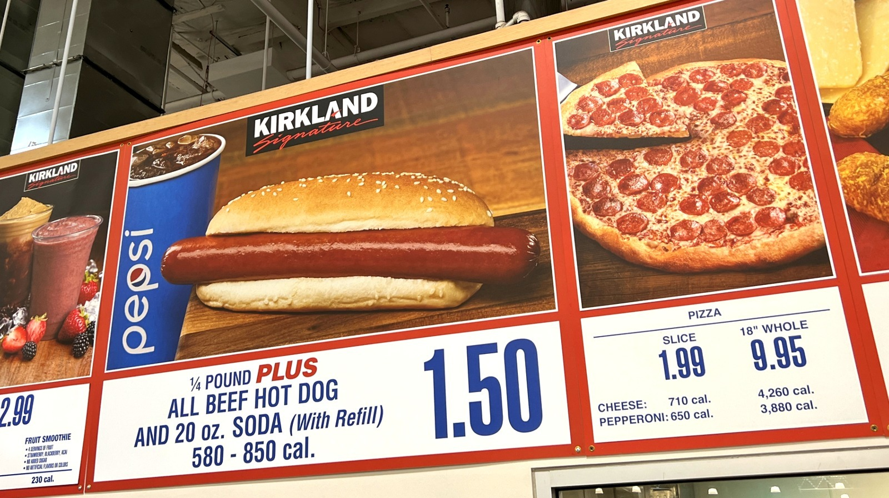
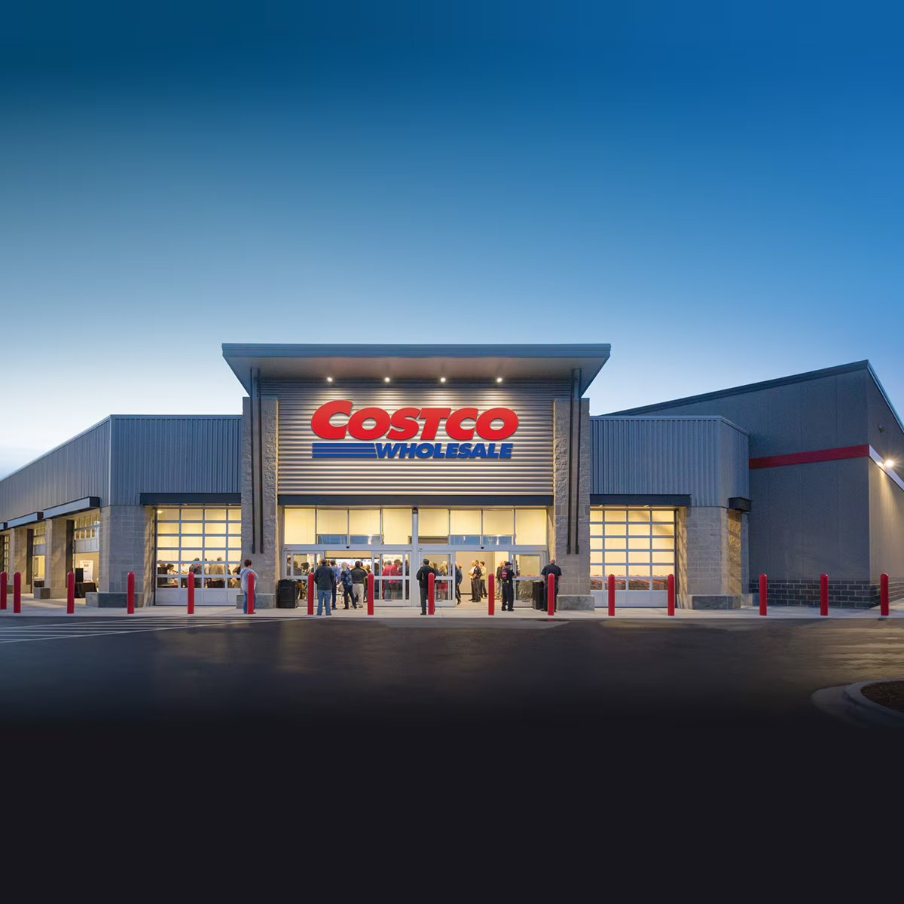

10 Costcos • 100 Miles • 3 Counties • 1 Legendary Ride
Welcome to the most delicious bike ride in Utah! Inspired by the legendary Taco Bell 50K in Denver, the Great Glizzy Gauntlet is a 100-mile century cycling adventure that takes you to 10 of 12 Costco locations across the greater Salt Lake area, spanning Utah, Salt Lake, and Davis Counties.
Designed around the FrontRunner commuter rail system and extensive bike trail network, this ride offers multiple bailout points so you can customize your challenge. Whether you're going for the full 100-mile century or just want to hit a few Costcos for food court glory, this route has you covered.
Follows the Wasatch Front's premier bike trails for safe, scenic riding
Multiple train stations along the route for easy bailouts
Tour Utah, Salt Lake, and Davis County in one epic ride
Because Costco's $1.50 hot dog combo has been the same price since 1985, making it the perfect symbol of value and consistency in an uncertain world. Also, they're delicious.
🌭 What's a "Glizzy"? Slang for hot dog, popularized in DC and spreading nationally via social media. Now you know!
Get reminders, route updates, and important announcements about the Great Glizzy Gauntlet.
We'll only send you important updates about the challenge. No spam, we promise! 🌭
📱 Highly Recommended: A GPS head unit with the route downloaded. The route has many turns and a GPS device will make navigation much easier and safer. Download from Ride with GPS.
You can order ANY item from the Costco food court!
Get the $1.50 hot dog combo at all 10 locations
Eat at least one slice of pizza at all 10 locations
Get a different menu item at each Costco
Get at least one free sample at 5 out of 10 locations (not all stores have samples every day!)
Complete the entire challenge in under 7 hours (elapsed time from first bite to last bite - fastest time wins!)
Start at Spanish Fork Costco before heading to Orem (adds ~15 miles!)
FrontRunner stations along the route allow you to catch the train home at various points:
Saturday, May 2, 2026:
Executive Members: 9:00 AM - 7:00 PM
Gold Star Members: 10:00 AM - 7:00 PM
Utah County • START
648 E 800 S, Orem
📍 Mile 3.1 | Start
Utah County
198 N 1200 E, Lehi
📍 Mile 20.9 | +17.8 miles from Orem
Utah County
1083 N Redwood Rd, Saratoga Springs
📍 Mile 26.4 | +5.5 miles from Lehi
Salt Lake County
13126 S Eagles Flight Rd, Riverton
📍 Mile 42.4 | +16.0 miles from Saratoga Springs
Salt Lake County
3571 W 10400 S, South Jordan
📍 Mile 46.9 | +4.5 miles from Riverton
Salt Lake County
11100 S Auto Mall Dr, Sandy
📍 Mile 52.0 | +5.1 miles from South Jordan
Salt Lake County
5201 Intermountain Dr, Murray
📍 Mile 64.6 | +12.6 miles from Sandy
Salt Lake County
3747 S 2700 W, West Valley
📍 Mile 70.9 | +6.3 miles from Murray
Salt Lake County
1818 S 300 W, Salt Lake City
📍 Mile 77.7 | +6.8 miles from West Valley
Davis County • FINISH
573 W 100 N, Bountiful
📍 Mile 98.9 | +21.2 miles from Salt Lake City
🚆 +1.1 miles to Woods Cross/Bountiful FrontRunner (Total: 100 miles)
Utah County • Optional Pre-Ride Extension
273 E 1000 N, Spanish Fork
Starting here adds ~15 miles to make it a 115-mile ride!
Note: Executive membership recommended if doing this extension to access food court at 9:00 AM and reach Orem by official 10:00 AM start.

The legendary $1.50 hot dog combo

Generic Costco
Costco food court options with cost & calories per stop:
Calories burned cycling 100 miles: ~5,000-5,500 cal
Choose wisely... or don't! 😄
Want to join the challenge? Here are suggested FrontRunner meeting times to arrive at Orem Costco together. Official ride start: 10:00 AM at Orem Costco. The early arrival gives time to meet fellow riders, discuss strategy, and wait for those coming from Spanish Fork. Times are approximate - check UTA schedule closer to event day!
Southbound train departure times (Saturday, May 2, 2026)
Depart: 8:03 AM
Starting point
8:08 AM
~54 min to Orem
8:17 AM
~45 min to Orem
8:26 AM
~36 min to Orem
8:32 AM
~30 min to Orem
8:42 AM
~20 min to Orem
8:50 AM
~12 min to Orem
8:57 AM
~5 min to Orem
Train Arrives: 9:02 AM
Official Ride Start: 10:00 AM
Meet at Orem Costco parking lot by 10:00 AM
Executive: 9:00 AM access • Regular: 10:00 AM
Estimated completion times based on 10:00 AM start:
🕐 Key Constraint: All Costco food courts close at 7:00 PM. To complete the challenge, you must reach Bountiful Costco before closing. A 14 mph moving average is the minimum realistic pace to finish in time.
Note: Sunset on May 2, 2026 is approximately 8:20 PM. Lights are required by law after sunset.
Yes! E-bikes are tolerated. However, it might be harder to eat so much food if you're not exerting yourself as much. The calories have to go somewhere!
That's completely fine! Use FrontRunner to bail out at any of the stations along the route. Completing even 5-6 Costcos is a significant accomplishment. This is about having fun, not suffering!
Absolutely! The more the merrier. Just make sure everyone either has their own Costco membership or rides with someone who does.
Nope! This is completely free. Just the cost of your food court items (approximately $15-50 depending on what you order at each stop).
Most Costcos have bike racks. If not, you can lock your bike to a cart corral or ask an employee for guidance. Alternatively, if riding in a group, one person can wait outside and watch the bikes while others order food. Take your valuables with you!
Important: Costco food courts accept debit cards, cash, or Visa credit cards ONLY. Mastercard, Discover, and Amex are NOT accepted.
Weather pending! May weather in Utah can be unpredictable (40°F to 80°F). If weather is mostly good, bring a light jacket just in case. The event may be postponed if conditions are dangerous (severe storms, extreme temperatures). Check your email 48 hours before for any updates.
You're responsible for your own repairs - bring spare tubes, tire levers, and a pump or CO2 cartridges. Fellow riders may help if they can, but don't count on it. This is a self-supported ride!
Highly recommended! The route has many turns and follows bike trails and roads throughout the Wasatch Front. A GPS head unit (Garmin, Wahoo, etc.) with the route downloaded will provide turn-by-turn navigation and make the ride much safer and more enjoyable. Download the route from Ride with GPS before the event. If you don't have a GPS unit, make sure to have the route loaded on your phone with offline maps, but a dedicated GPS device is strongly recommended.
Yes! To be eligible for bonus challenges and bragging rights, submit photos and GPS data via our verification page.
Pack your cycling gear and prepare for the most delicious century ride in Utah!
Remember to bring: water bottles, spare tubes, bike lights, sunscreen, helmet, phone, and appetite!
📱 Highly Recommended: A GPS head unit (Garmin, Wahoo, etc.) with the route downloaded. The route is complex with many turns, and having turn-by-turn navigation will make your ride much safer and more enjoyable. Download the route from Ride with GPS before the event!
The Great Glizzy Gauntlet is NOT affiliated with, sponsored by, or endorsed by Costco Wholesale Corporation or UTA FrontRunner. This is an independent, unofficial cycling challenge organized by community members.
BY PARTICIPATING IN THIS CHALLENGE, YOU ACKNOWLEDGE AND AGREE:
While this is a self-supported challenge, riders are encouraged to help each other out!
Remember: We're all in this together - help make it a safe and fun experience for everyone! 🌭🚲